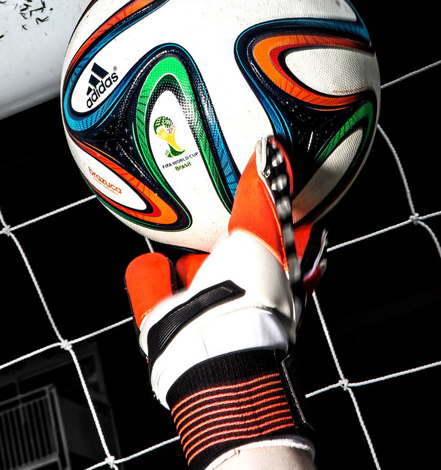

-
促进生长 身高是反映人体骨骼发育状况的指标。经常参加足球运动能促进青少年时期骨骼的生长发育，促进身高的增长。根据有关资料表明:足球运动员身高增长高峰期在13 – 14岁，这两年平均每年增长8公分，一般增长6 – 10公分，个别增长10公分以上。15岁以后增长速度减慢。作为运动员，身高的增长主要受遗传、营养、吸收能力、饮食习惯、作息制度等因素的影响。从医学角度来讲起主导作用且不可改变的是遗传因素，但多参加体育锻炼也将起到极其重要的作用。 体重是反映人体骨骼、肌肉发育程度的指标，对衡量人体的生长发育和健康状况有重要意义 READ MORE
-
促进新陈代谢 通过足球训练，能促进人体的新陈代谢，改善呼吸系统、心脏等器官的功能，增加食欲，提高吸收能力。同时，对提高青少年的肌肉、韧带力量等具有较好的锻炼效果。研究结果表明：运动员体重的增长，大大超过我国青少年同年龄体重增长指数。肌肉的结实、发达，对你体形的健美，运动能力的提高以及对各种运动创伤的预防都有重要的作用。 READ MORE